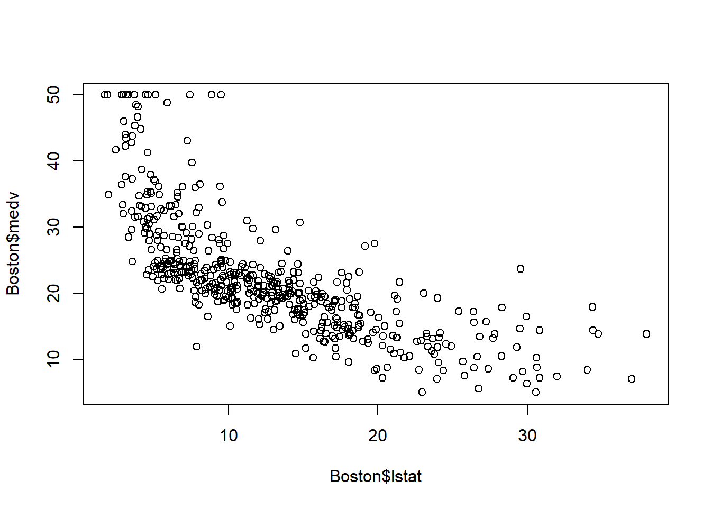
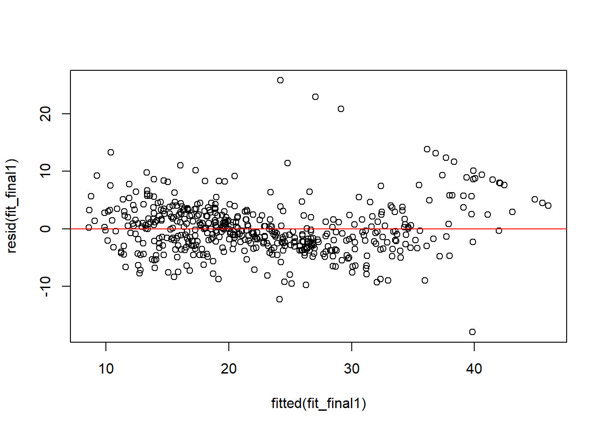

library(MASS)
data(Boston)11 Example: MLR phase
We continue to look at the Boston Housing price dataset.
Recall that
| Variable | Description | Type |
|---|---|---|
crim |
Per capita crime rate by town | Numerical, continuous |
zn |
Proportion of residential land zoned for lots over 25,000 sq.ft. | Numerical, continuous |
indus |
Proportion of non-retail business acres per town | Numerical, continuous |
chas |
Charles River dummy variable (1 if tract bounds river; 0 otherwise) | Categorical, nominal |
nox |
Nitrogen oxides concentration (parts per 10 million) | Numerical, continuous |
rm |
Average number of rooms per dwelling | Numerical, continuous |
age |
Proportion of owner-occupied units built prior to 1940 | Numerical, continuous |
dis |
Weighted mean distance to five Boston employment centers | Numerical, continuous |
rad |
Index of accessibility to radial highways (larger = better accessibility) | Categorical, ordinal |
tax |
Full-value property-tax rate per $10,000 | Numerical, continuous |
ptratio |
Pupil–teacher ratio by town | Numerical, continuous |
black |
\(1000(B_k - 0.63)^2\), where \(B_k\) is the proportion of Black residents | Numerical, continuous |
lstat |
Percentage of lower-status population | Numerical, continuous |
medv |
Median value of owner-occupied homes (in $1,000s) | Numerical, continuous |
We need to change chas and rad to be factors.
Boston$chas <- factor(Boston$chas)
Boston$rad <- factor(Boston$rad)11.1 With all predictors
We start from the full model with all predictors.
fit.full <- lm(medv ~ ., data=Boston)
anova_alt(fit.full)
## Analysis of Variance Table
##
## Df SS MS F P
## Source 20 32032 1601.58 72.698 8.2948e-132
## Error 485 10685 22.03
## Total 505 42716All variables as a group are significant.
Now we consider building a model with part of the predictors. We have 13 independent variables to choose. Should all the predictors be included in the model? Or use only a couple of them? Which ones should be in the model? We will decide by using variable selection procedures, which is discussed in the next unit.
By using variable selection procedures, we could identify the most important predictors. For now, let’s say, we are going to fit models with 5 predictors chosen: lstat, rm, dis, ptratio, chas.
Boston_5_pred <- Boston[, c("lstat", "rm", "dis", "ptratio","chas", "medv")]First, we model medv (\(y\)) as a function of the lower status of the population lstat (\(x_1\)), average number of rooms rm (\(x_2\)), distance to Boston employment centres dis (\(x_3\)), pupil-teacher ratio ptratio (\(x_4\)), and if tract bounds river chas (\(x_5\)).
fit0 <- lm(medv ~ lstat + rm + dis + ptratio + chas, data = Boston_5_pred)
summary(fit0)
##
## Call:
## lm(formula = medv ~ lstat + rm + dis + ptratio + chas, data = Boston_5_pred)
##
## Residuals:
## Min 1Q Median 3Q Max
## -17.9355 -2.9712 -0.6246 1.8183 27.3931
##
## Coefficients:
## Estimate Std. Error t value Pr(>|t|)
## (Intercept) 23.46692 4.05271 5.790 1.24e-08 ***
## lstat -0.65845 0.04637 -14.198 < 2e-16 ***
## rm 4.17966 0.42016 9.948 < 2e-16 ***
## dis -0.49227 0.12715 -3.871 0.000123 ***
## ptratio -0.93220 0.11569 -8.058 5.75e-15 ***
## chas1 2.92247 0.90989 3.212 0.001404 **
## ---
## Signif. codes: 0 '***' 0.001 '**' 0.01 '*' 0.05 '.' 0.1 ' ' 1
##
## Residual standard error: 5.091 on 500 degrees of freedom
## Multiple R-squared: 0.6966, Adjusted R-squared: 0.6935
## F-statistic: 229.6 on 5 and 500 DF, p-value: < 2.2e-16anova_alt(fit0)
## Analysis of Variance Table
##
## Df SS MS F P
## Source 5 29755 5951.0 229.56 5.7196e-127
## Error 500 12961 25.9
## Total 505 42716Since the p-value from the ANOVA table is small, these 5 variables as a group are significantly related to medv.
11.2 Is chas significant in the above model?
To answer this question, we simply look at the summary table of fit0. From the table all 5 variables are significant. We would like to discuss chas in details since it is qualitative.
coef(summary(fit0))['chas1', ]
## Estimate Std. Error t value Pr(>|t|)
## 2.922471289 0.909893844 3.211881593 0.001403636From the output above, we could find on average, when controlling all other variables, the expected value of the median value of a house is $2922.5 higher for the houses tract bounds river than those not.
We could also perfer a hypothesis test as follows:
- \(H_0:\)
chasis not a significant predictor in the 5 variable model. - \(H_a:\)
chasis a significant predictor in the 5 variable model.
Since p-value = 0.001403636 \(<\alpha=\) 0.05, the null hypothesis is rejected. We conclude that chas is a significant predictor in the 5 variable model.
Click to expand if you are interested in testing chas individually.
We fit the regression model with medv as the \(y\) and chas as the independent variable \(x_5\). Note that, chas is a dummy variable with 2 options. Therefore not tract bounds river (chas=0) is chosen as the base level.
fit_chas<-lm(medv ~ chas, data = Boston_5_pred)
summary(fit_chas)
##
## Call:
## lm(formula = medv ~ chas, data = Boston_5_pred)
##
## Residuals:
## Min 1Q Median 3Q Max
## -17.094 -5.894 -1.417 2.856 27.906
##
## Coefficients:
## Estimate Std. Error t value Pr(>|t|)
## (Intercept) 22.0938 0.4176 52.902 < 2e-16 ***
## chas1 6.3462 1.5880 3.996 7.39e-05 ***
## ---
## Signif. codes: 0 '***' 0.001 '**' 0.01 '*' 0.05 '.' 0.1 ' ' 1
##
## Residual standard error: 9.064 on 504 degrees of freedom
## Multiple R-squared: 0.03072, Adjusted R-squared: 0.02879
## F-statistic: 15.97 on 1 and 504 DF, p-value: 7.391e-05anova_alt(fit_chas)
## Analysis of Variance Table
##
## Df SS MS F P
## Source 1 1312 1312.08 15.972 7.3906e-05
## Error 504 41404 82.15
## Total 505 42716From the output above, we could find on average, the expected value of the median value of a house is $6346 higher for the houses tract bounds river than those not.
We could also perfer a hypothesis test as follows:
- \(H_0:\)
chasis not a significant predictor. - \(H_a:\)
chasis a significant predictor.
chas is a significant predictor. However, on the other hand, the coefficient of determination \(r^2=0.03\), which is quite small value. In other word, in addition to chas, we need more predictors in the model.
11.3 The relationship between lstat and medv
In SLR, we fitted straight-line model to relate medv (\(y\)) and lstat (\(x_1\)).
plot(Boston$lstat, Boston$medv)
fit_lstat <- lm(medv ~ lstat, data = Boston_5_pred)The scatterplot shows curvilinear relationship, which suggests a curivilinear model might be a better fit. We will fit the curvilinear model \(y=\beta_0+\beta_1 x_1+\beta_2 x_1^2+\varepsilon\).
fit_quad <- lm(medv ~ lstat + I(lstat^2), data = Boston_5_pred)
summary(fit_quad)
##
## Call:
## lm(formula = medv ~ lstat + I(lstat^2), data = Boston_5_pred)
##
## Residuals:
## Min 1Q Median 3Q Max
## -15.2834 -3.8313 -0.5295 2.3095 25.4148
##
## Coefficients:
## Estimate Std. Error t value Pr(>|t|)
## (Intercept) 42.862007 0.872084 49.15 <2e-16 ***
## lstat -2.332821 0.123803 -18.84 <2e-16 ***
## I(lstat^2) 0.043547 0.003745 11.63 <2e-16 ***
## ---
## Signif. codes: 0 '***' 0.001 '**' 0.01 '*' 0.05 '.' 0.1 ' ' 1
##
## Residual standard error: 5.524 on 503 degrees of freedom
## Multiple R-squared: 0.6407, Adjusted R-squared: 0.6393
## F-statistic: 448.5 on 2 and 503 DF, p-value: < 2.2e-16anova_alt(fit_quad)
## Analysis of Variance Table
##
## Df SS MS F P
## Source 2 27369 13684.5 448.51 1.5572e-112
## Error 503 15347 30.5
## Total 505 42716First, we test the overall significance of this curvilinear model.
- \(H_0: \beta_1=\beta_2=0\)
- \(H_a:\) At least one of the \(\beta\)’s \(\neq 0\)
Since the p-value is almost 0, which is less than \(\alpha=0.05\), we reject \(H_0\) and conclude the curvilinear model is adequate.
In order to identify whether the curvilinear term lstat\(^2\) should be kept in the model, we could run the \(t\)-test, or partial \(F\)-test. Since there is only one additional factor (i.e. lstat\(^2\)) is considered here, these two tests are equivalent.
anova(fit_lstat, fit_quad)
## Analysis of Variance Table
##
## Model 1: medv ~ lstat
## Model 2: medv ~ lstat + I(lstat^2)
## Res.Df RSS Df Sum of Sq F Pr(>F)
## 1 504 19472
## 2 503 15347 1 4125.1 135.2 < 2.2e-16 ***
## ---
## Signif. codes: 0 '***' 0.001 '**' 0.01 '*' 0.05 '.' 0.1 ' ' 1\(H_0: y=\beta_0+\beta_1 x\) (Reduced Model)
\(H_a:y=\beta_0+\beta_1 x +\beta_2 x^2\) (Complete Model)
Since the \(p\)-value =7.63e-28 \(<\alpha\), we reject \(H_0\) and conclude the complete model is preferred. Therefore, medv and lstat are related in a curvilinear way, with upward curvature (as \(\beta_2>0\)).
Caution
This analysis serves only as a preliminary check. Any candidate quadratic or interaction term should be assessed again in the full multiple regression model, since its significance may change after adjusting for the other predictors. The same applies to the next two sections.
11.4 Interaction between rm and dis
An analyst hypothesizes that the effect of distance to Boston employment centres on house price will be greater when there are more room numbers. To test this hypothesis, we will need to run an interaction model for \(E(y)\) as a function of rm (\(x_2\)), dis(\(x_3\)), and rm:dis (\(x_2x_3\)).
fit_interaction <- lm(medv ~ rm * dis, data = Boston_5_pred)
summary(fit_interaction)
##
## Call:
## lm(formula = medv ~ rm * dis, data = Boston_5_pred)
##
## Residuals:
## Min 1Q Median 3Q Max
## -18.423 -3.276 0.104 2.831 38.061
##
## Coefficients:
## Estimate Std. Error t value Pr(>|t|)
## (Intercept) -15.2533 4.8953 -3.116 0.00194 **
## rm 5.7020 0.7851 7.263 1.45e-12 ***
## dis -5.7579 1.3500 -4.265 2.39e-05 ***
## rm:dis 0.9855 0.2119 4.652 4.22e-06 ***
## ---
## Signif. codes: 0 '***' 0.001 '**' 0.01 '*' 0.05 '.' 0.1 ' ' 1
##
## Residual standard error: 6.415 on 502 degrees of freedom
## Multiple R-squared: 0.5164, Adjusted R-squared: 0.5135
## F-statistic: 178.7 on 3 and 502 DF, p-value: < 2.2e-16anova_alt(fit_interaction)
## Analysis of Variance Table
##
## Df SS MS F P
## Source 3 22057 7352.5 178.66 8.3739e-79
## Error 502 20659 41.2
## Total 505 42716- \(H_0\): There is no significant interaction between
rmanddis. - \(H_a:\) There is a significant interaction between
rmanddis.
From the p-value = 0.0000042 \(<\alpha=.05\) for rm:dis in the summary table, we conclude there is a significant interaction between rm and dis. This suggests that distance from Boston employment centres and number of rooms interact positively in their association with median house price.
11.5 Interaction between chas and dis
As an additional illustration, we may also examine whether the effect of distance to Boston employment centres depends on whether the tract bounds the Charles River. Compared with the earlier cases of lstat^2 and rm:dis, this interaction is more exploratory and is included mainly to demonstrate how an additional interaction term can be tested.
To investigate this, we fit a model with chas, dis, and their interaction chas:dis.
fit_interaction2 <- lm(medv ~ chas * dis, data = Boston_5_pred)
summary(fit_interaction2)
##
## Call:
## lm(formula = medv ~ chas * dis, data = Boston_5_pred)
##
## Residuals:
## Min 1Q Median 3Q Max
## -14.291 -5.660 -1.572 2.513 31.089
##
## Coefficients:
## Estimate Std. Error t value Pr(>|t|)
## (Intercept) 17.5238 0.8279 21.166 < 2e-16 ***
## chas1 8.2399 3.9944 2.063 0.0396 *
## dis 1.1864 0.1878 6.317 5.89e-10 ***
## chas1:dis -0.3031 1.2088 -0.251 0.8021
## ---
## Signif. codes: 0 '***' 0.001 '**' 0.01 '*' 0.05 '.' 0.1 ' ' 1
##
## Residual standard error: 8.737 on 502 degrees of freedom
## Multiple R-squared: 0.103, Adjusted R-squared: 0.09763
## F-statistic: 19.21 on 3 and 502 DF, p-value: 8.287e-12anova_alt(fit_interaction2)
## Analysis of Variance Table
##
## Df SS MS F P
## Source 3 4399 1466.49 19.213 8.2873e-12
## Error 502 38317 76.33
## Total 505 42716- \(H_0\): There is no significant interaction between
chasanddis. - \(H_a:\) There is a significant interaction between
chasanddis.
From the p-value = 0.8021 \(>\alpha=.05\) for chas:dis in the summary table, we fail to find sufficient evidence of a significant interaction between chas and dis. This suggests that the interaction is not strongly supported at the preliminary stage.
Note
This smaller-model test is part of a preliminary screening step. Its purpose is to identify candidate higher-order/interaction terms before constructing the fuller multiple regression model. If a term is not significant and lacks strong theoretical motivation, it may be dropped at this stage. However, a term that is of substantive interest may still be carried forward and reassessed in the full model, since its significance can change after adjusting for other predictors.
In this example, we retain chas:dis temporarily for illustration and make the final decision later in the fuller model.
11.6 Put things together
Based on the preliminary analyses above, the quadratic term I(lstat^2) and the interaction term rm:dis appear to be promising candidates for the final model. We also include chas:dis temporarily as an exploratory interaction so that its contribution can be reassessed in the fuller multiple regression setting.
Starting from the 5-predictor main-effects model, we next fit a larger model that includes the candidate quadratic and interaction terms under consideration. Here, medv (\(y\)) is modeled using lstat (\(x_1\)), rm (\(x_2\)), dis (\(x_3\)), ptratio (\(x_4\)), and chas (\(x_5\)). \[
y=\beta_0+\beta_1x_1+\beta_2x_2+\beta_3x_3+\beta_4x_4+\beta_5x_5+\beta_6x_1^2+\beta_7x_2x_3+\beta_8x_3x_5+\varepsilon.
\]
fit0 <- lm(medv ~ lstat + rm + dis + ptratio + chas, data = Boston_5_pred)
fit_final0 <- lm(medv ~ lstat + rm + dis + ptratio + chas + I(lstat^2) + rm:dis + chas:dis, data = Boston_5_pred)
summary(fit_final0)
##
## Call:
## lm(formula = medv ~ lstat + rm + dis + ptratio + chas + I(lstat^2) +
## rm:dis + chas:dis, data = Boston_5_pred)
##
## Residuals:
## Min 1Q Median 3Q Max
## -17.8725 -2.8131 -0.4792 2.3980 25.7657
##
## Coefficients:
## Estimate Std. Error t value Pr(>|t|)
## (Intercept) 39.120944 4.596990 8.510 < 2e-16 ***
## lstat -1.768398 0.128522 -13.759 < 2e-16 ***
## rm 2.301479 0.622749 3.696 0.000244 ***
## dis -2.976134 1.051700 -2.830 0.004846 **
## ptratio -0.714222 0.106117 -6.730 4.67e-11 ***
## chas1 2.743745 2.130889 1.288 0.198482
## I(lstat^2) 0.031996 0.003538 9.045 < 2e-16 ***
## rm:dis 0.366163 0.166298 2.202 0.028135 *
## dis:chas1 0.069681 0.643259 0.108 0.913782
## ---
## Signif. codes: 0 '***' 0.001 '**' 0.01 '*' 0.05 '.' 0.1 ' ' 1
##
## Residual standard error: 4.586 on 497 degrees of freedom
## Multiple R-squared: 0.7553, Adjusted R-squared: 0.7514
## F-statistic: 191.8 on 8 and 497 DF, p-value: < 2.2e-16anova_alt(fit_final0)
## Analysis of Variance Table
##
## Df SS MS F P
## Source 8 32266 4033.2 191.81 1.2854e-146
## Error 497 10451 21.0
## Total 505 42716From the summary table, the interaction term chas:dis is not significant. This agrees with the earlier preliminary analysis. To formally assess whether this interaction should remain in the model, we compare the full model with a reduced model that excludes chas:dis.
fit_chasdis <- lm(medv ~ lstat + rm + dis + ptratio + chas + I(lstat^2) + rm:dis, data = Boston_5_pred)
anova(fit_chasdis, fit_final0)
## Analysis of Variance Table
##
## Model 1: medv ~ lstat + rm + dis + ptratio + chas + I(lstat^2) + rm:dis
## Model 2: medv ~ lstat + rm + dis + ptratio + chas + I(lstat^2) + rm:dis +
## chas:dis
## Res.Df RSS Df Sum of Sq F Pr(>F)
## 1 498 10451
## 2 497 10451 1 0.24674 0.0117 0.9138Since the p-value is not significant, we do not find sufficient evidence that chas:dis improves the model, so we remove it. Then the updated full model is \[
y=\beta_0+\beta_1x_1+\beta_2x_2+\beta_3x_3+\beta_4x_4+\beta_5x_5+\beta_6x_1^2+\beta_7x_2x_3+\varepsilon.
\]
fit_final1 <- lm(medv ~ lstat + rm + dis + ptratio + chas + I(lstat^2) + rm:dis, data = Boston_5_pred)Next, we assess whether the quadratic term I(lstat^2) should remain in the model by comparing the reduced model without I(lstat^2) to the model that includes it.
fit_nolstat2 <- lm(medv ~ lstat + rm + dis + ptratio + chas + rm:dis, data = Boston_5_pred)
anova(fit_nolstat2, fit_final1)
## Analysis of Variance Table
##
## Model 1: medv ~ lstat + rm + dis + ptratio + chas + rm:dis
## Model 2: medv ~ lstat + rm + dis + ptratio + chas + I(lstat^2) + rm:dis
## Res.Df RSS Df Sum of Sq F Pr(>F)
## 1 499 12176
## 2 498 10451 1 1724.7 82.185 < 2.2e-16 ***
## ---
## Signif. codes: 0 '***' 0.001 '**' 0.01 '*' 0.05 '.' 0.1 ' ' 1Since the p-value is small, the quadratic term I(lstat^2) is significant and should be retained.
We then assess the interaction term rm:dis in the same way.
fit_normdis <- lm(medv ~ lstat + rm + dis + ptratio + chas + I(lstat^2), data = Boston_5_pred)
anova(fit_normdis, fit_final1)
## Analysis of Variance Table
##
## Model 1: medv ~ lstat + rm + dis + ptratio + chas + I(lstat^2)
## Model 2: medv ~ lstat + rm + dis + ptratio + chas + I(lstat^2) + rm:dis
## Res.Df RSS Df Sum of Sq F Pr(>F)
## 1 499 10556
## 2 498 10451 1 104.92 4.9996 0.02579 *
## ---
## Signif. codes: 0 '***' 0.001 '**' 0.01 '*' 0.05 '.' 0.1 ' ' 1Since the p-value is small, the interaction term rm:dis is significant and should also be retained.
Therefore, the final model is \[ y=\beta_0+\beta_1x_1+\beta_2x_2+\beta_3x_3+\beta_4x_4+\beta_5x_5+\beta_6x_1^2+\beta_7x_2x_3+\varepsilon. \]
fit_final1 <- lm(medv ~ lstat + rm + dis + ptratio + chas + I(lstat^2) + rm:dis, data = Boston_5_pred)
summary(fit_final1)
##
## Call:
## lm(formula = medv ~ lstat + rm + dis + ptratio + chas + I(lstat^2) +
## rm:dis, data = Boston_5_pred)
##
## Residuals:
## Min 1Q Median 3Q Max
## -17.9467 -2.8138 -0.4877 2.3946 25.7730
##
## Coefficients:
## Estimate Std. Error t value Pr(>|t|)
## (Intercept) 39.117492 4.592316 8.518 < 2e-16 ***
## lstat -1.767141 0.127871 -13.820 < 2e-16 ***
## rm 2.298469 0.621511 3.698 0.000241 ***
## dis -2.988347 1.044602 -2.861 0.004404 **
## ptratio -0.714084 0.106004 -6.736 4.5e-11 ***
## chas1 2.956808 0.818973 3.610 0.000337 ***
## I(lstat^2) 0.031971 0.003527 9.066 < 2e-16 ***
## rm:dis 0.368454 0.164783 2.236 0.025795 *
## ---
## Signif. codes: 0 '***' 0.001 '**' 0.01 '*' 0.05 '.' 0.1 ' ' 1
##
## Residual standard error: 4.581 on 498 degrees of freedom
## Multiple R-squared: 0.7553, Adjusted R-squared: 0.7519
## F-statistic: 219.6 on 7 and 498 DF, p-value: < 2.2e-16In the final model, all retained terms are significant. The adjusted \(R^2\) is 0.7519, indicating that this model explains a substantial proportion of the variability in medv among the models considered here.
11.7 Residual analysis
We briefly examine the residuals of the final model using a residual plot.
plot(fitted(fit_final1), resid(fit_final1))
abline(h = 0, col = "red")
Compared with the residual plot Figure 7.1 from the simple linear regression model, this one shows less obvious structure. This suggests that the final multiple regression model gives a better fit, although the assumptions are still not perfect.